Verified golden references
Rendering authority only. Source pixel size preserved; expanded transparent canvases are not resized.

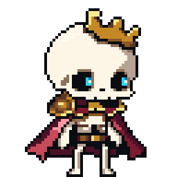

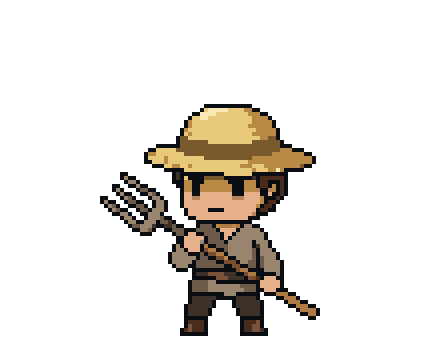

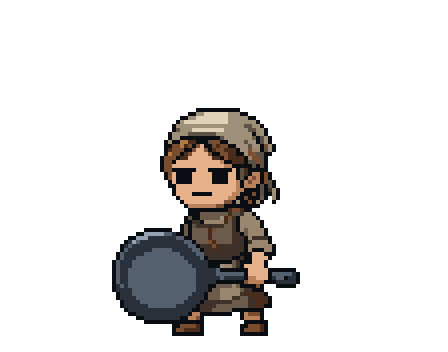
Setup and diagnostics complete · 0 paid calls · No new scene art · Not merged
Only stage00 was executed. Full report · Tools and costs · Candidate material brief
Verified finding: the current live scene stretches individual source pixels unevenly. The isolated scaffold preserves exact1x/3x pixels. Existing game360x640 cannot fit its current board; supported-size captures are below.
Original lossless captures at physical resolution, in scrollable panes. These are existing production art, not new candidates.
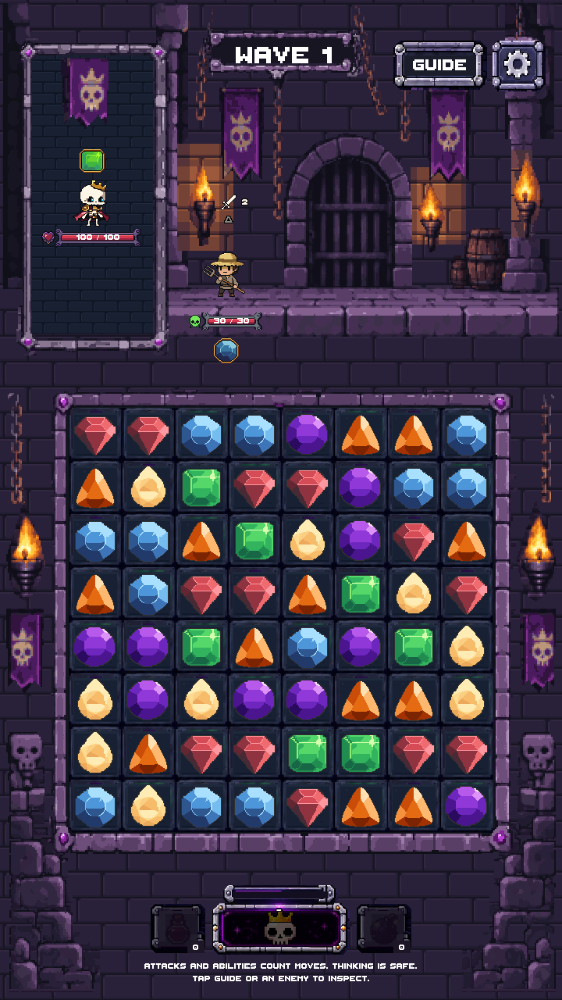
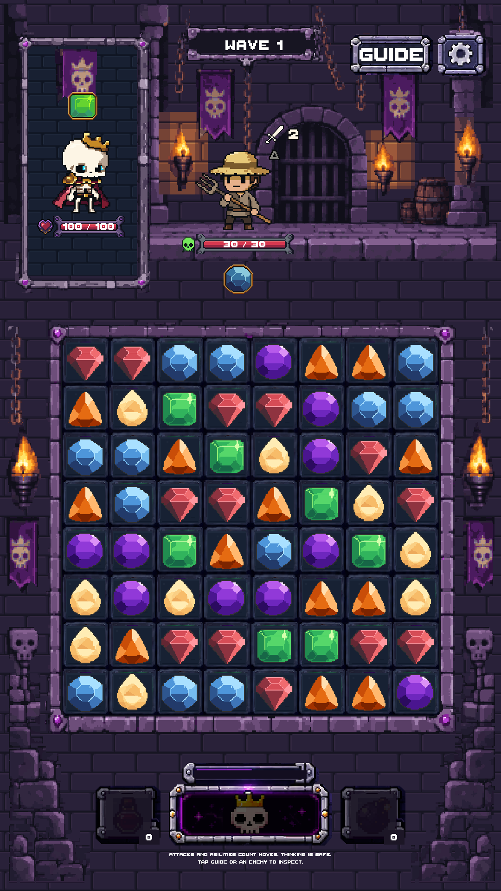
Native source, nearest-neighbor4x, then unscaled live crop. Keep the different dimensions in mind: the live version is stretched by different x/y ratios.
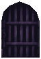
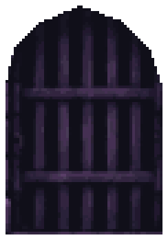
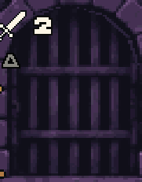
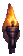
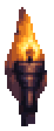
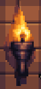
Source and actual imported Game View pixels match exactly at1x and3x. Old wall is a diagnostic sample only.
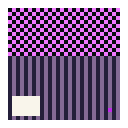
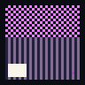
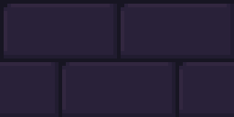
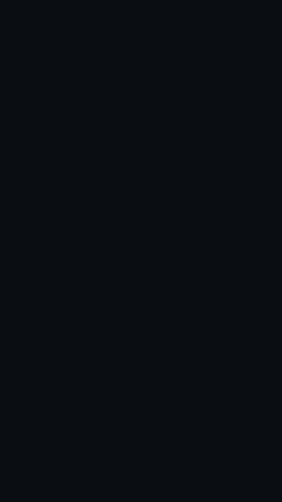
Rendering authority only. Source pixel size preserved; expanded transparent canvases are not resized.



Wall / stone lip / silver / purple accents / warm torch / portrait recess, top to bottom. Dark to light left to right. These do not amend the canonical palette.
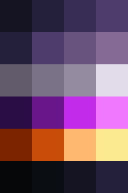
Stopped after stage00. Next stage requires your next prompt.